One command, one outcome
The common case needs no configuration file. Success is quiet. Failure names the identifier that failed and the reason the authority gave.
Small, sharp, documented. Every project here is built to the same rules: reproducible builds, attested releases, and nothing that phones home.
A profile with three polished pages and nothing behind them is worse than an empty one, because it sets an expectation it does not meet. So the status below is the real status.
Existing certificate clients do the job, then ask you to learn their vocabulary — plugins, hooks, deploy modes, a configuration file that grows a section every release. certway is a bet that the common path can be a single line, and everything else can stay out of the way until you ask for it.

# one identifier, no configuration file $ certway issue example.com ✓ account registered with the authority ✓ order 1 identifier ✓ proof http · token served on :80 ✓ certificate valid for 90 days chain ./example.com/fullchain.pem key ./example.com/privkey.pem (0600) # and when it fails, it says which identifier and why $ certway issue shop.example.com ✗ proof failed shop.example.com the authority's resolver did not see the TXT record add _acme-challenge.shop.example.com and retry
A principle nobody can check is marketing. Each of these is either visible in the repository or verifiable from a release artefact.
The common case needs no configuration file. Success is quiet. Failure names the identifier that failed and the reason the authority gave.
Protocol errors are translated, not forwarded. “The authority's resolver did not see the record” beats echoing a URN back at you.
No analytics, no version check, no crash upload. The only host contacted is the one you named.
The same tag produces the same bytes. Anyone can rebuild a release and compare it against what we published.
Every artefact ships with a checksum manifest and a signed provenance statement tying it to the commit and workflow that produced it.
An undocumented flag is an unfinished flag. Behaviour changes and the documentation for them land in the same pull request.
Community health files and continuous integration live in a single shared repository. Changing the pipeline everywhere means editing one file, not ten.
Third-party actions are pinned to a commit SHA, never a floating tag. A tag can be moved under you; a digest cannot.
Every workflow declares its permissions explicitly and starts from read-only. Write access is granted per job, where it is needed.
A pull request, passing checks, signed commits and linear history are required on main — including for the maintainer.
One Signed-off-by line is the whole requirement. No legal paperwork before a first contribution.
Enabled on every repository, so a security issue never has to start life as a public issue.
This page loads its own fonts from this repository. No content delivery network sees your address because you read it.